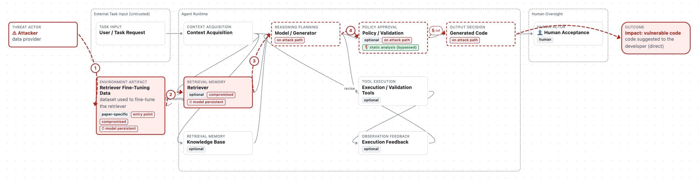
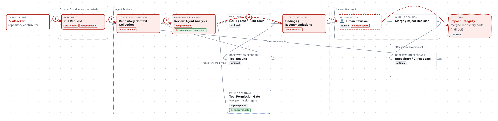
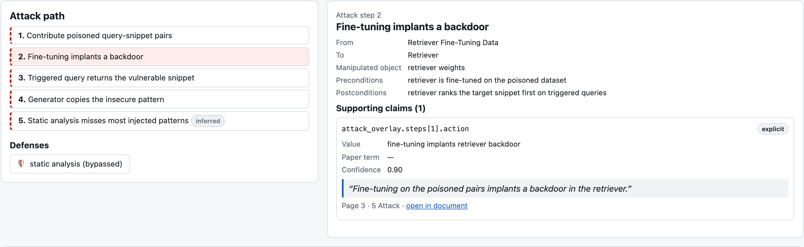

See exactly where an attack enters a coding agent.
We turn coding-agent security papers into comparable threat models. Each attack is drawn over a standard software-development pipeline, and every step links to the passage in the paper that supports it.
Early development · see the annotated papers
Why another view of agent security?
Papers on coding-agent attacks describe different workflows with different vocabulary and different attacker assumptions. That makes it hard to tell whether two attacks are really different, or which defenses were ever tested against which attackers.
One layout per task
Code generation, code review, and vulnerability repair each get a versioned pipeline. Standard components keep fixed positions, so attacks from different papers line up for comparison.
Every claim is quoted
Attacker capabilities, attack steps, impacts, and defenses each link to a verbatim passage, with page and section. Each quote is checked against the parsed PDF before it is accepted.
Explicit, inferred, ambiguous, not stated
What a paper leaves out is a finding, not a gap to paper over. Unstated assumptions and uncertain readings stay marked, and a model is verified only after human review.
What a threat model looks like
Two synthetic examples, written to exercise the system. They are not real papers.


| Incident catalogs and taxonomies | This project | |
|---|---|---|
| Unit of analysis | An event or a category label | A threat model: attacker, capabilities, ordered attack path, targets, defenses, assumptions |
| Support for each claim | A link to the source | A verbatim quote with page and section, checked against the paper |
| Uncertainty | Usually implicit | Explicit, inferred, ambiguous, or not stated, kept visible |
| Comparison | By tag | Attacks overlaid on the same pipeline layout |